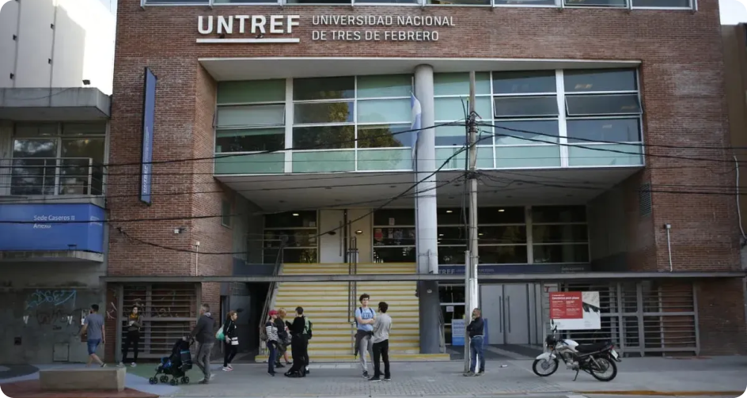

Universidad Nacional de Tres de Febrero (UNTREF)
Fundada en 1995, se destaca por su innovación educativa y su oferta multidisciplinaria.
Carreras:
La UNTREF combina educación de calidad con innovación, ofreciendo programas que cubren desde el arte y la tecnología hasta las ciencias exactas.
Profesorados
- Profesorado de geografia
- Profesorado en historia
- Profesorado en Letras
- Licenciatura de Nutricion
- Licenciatura en psicomotricidad
- Licenciatura en Musica Autoctona, Calsica y Popular de America
- Licenciatura en Proteccion civil y Emergencias
- Licenciatura en Gestion del arte y la Cultura
- Licenciatura en seguridad e higiene
- Licenciatura en sistemas de informacion geografica
- Licenciatura en geografia
- Licenciatura en Musica
- Licenciatura en historia
- Licenciatura en enfermeria
- Licenciatura en Administracion y Gestion de las politicas Sociales
- Licenciatura en estadisticas y ciencia de Datos
- Licenciatura en Administracion publica
- Licenciatura en Administracion de empresas
- Licenciatura en Produccion Audiovisual
- Licenciatura en Logistica
- Licenciatura en Letras
- Licenciatura en resolucion de conflictos y mediacion
- Licenciatura en Ciencias de la educación
Ingeniería:
- Ingeniería de Sonido
- Ingeniería en computación
- Ingenieria Ambiental
Ciencias Sociales y Gestión:
- Licenciatura en Relaciones Comerciales Internacionales
- Licenciatura en Gestión Ambiental
Modalidades Disponibles y Datos de Contacto
Modalidades de Estudio:
- Presencial, virtual e híbrido, según el programa.
Contacto:
- Página web: www.untref.edu.ar
- Dirección: Valentín Gómez 4752, Caseros, Buenos Aires
- Teléfono: (011) 4759-0040